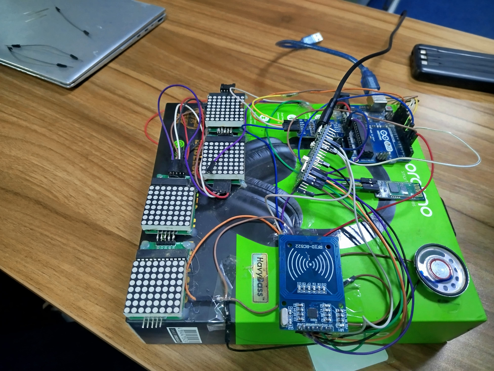
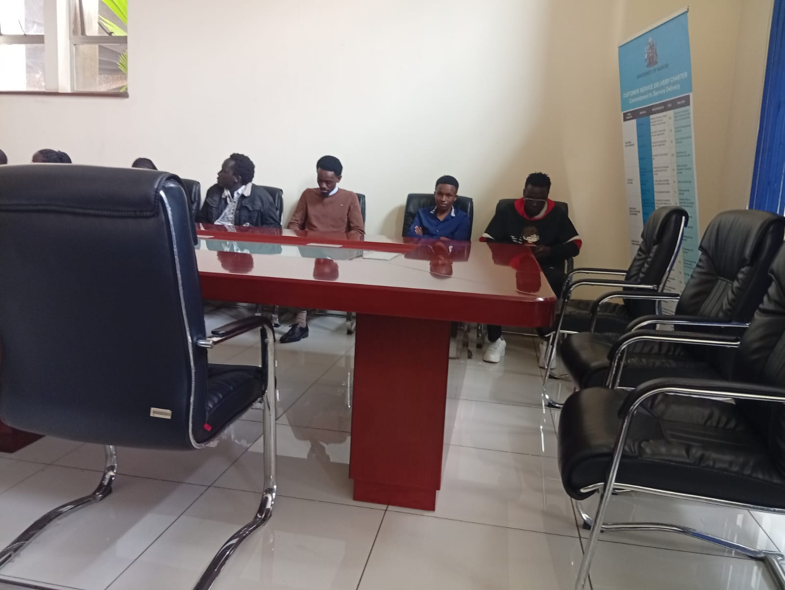
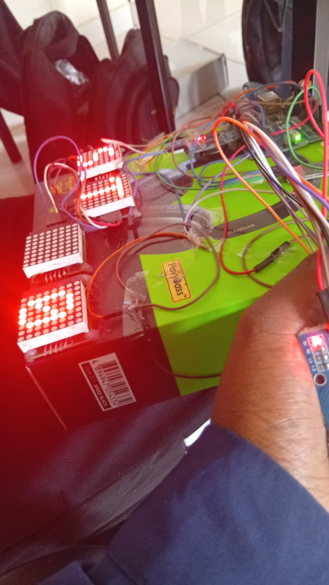
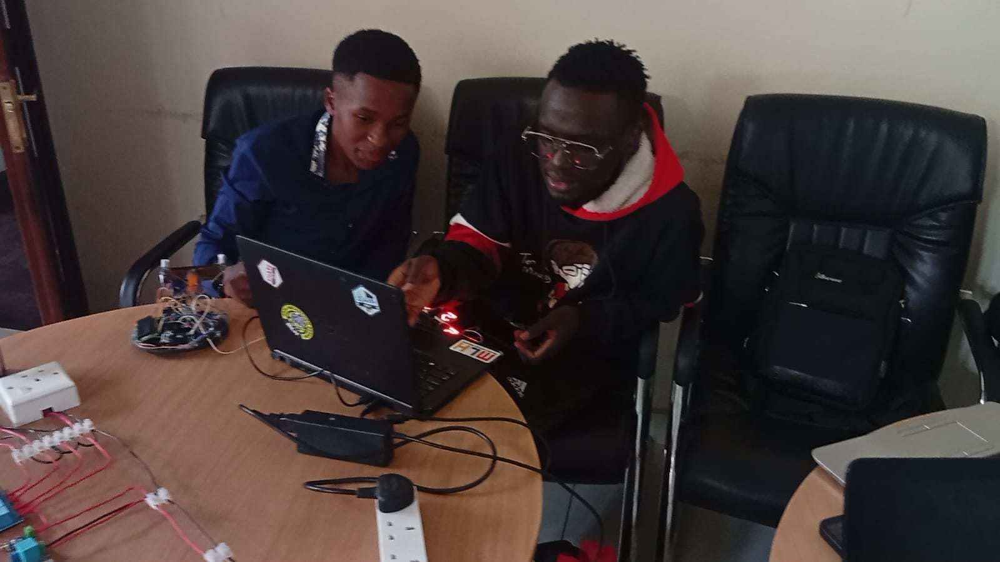
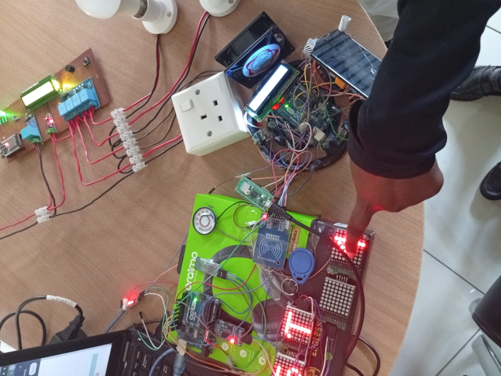
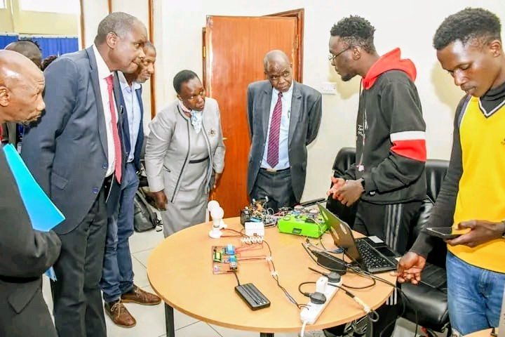

RFID Student Attendance System
A more efficient alternative to paper-based attendance marking in universities
How it works
Students tap their registered RFID attendance card on the reader. The Raspberry Pi Pico W identifies the card, records the student's attendance status, and sends the result and present-student count to the Arduino display controller.
Lecturers use the local Wi-Fi dashboard to register new students, view registered students and their latest attendance status, configure a late-attendance cutoff, and remove student records when necessary.
Project Gallery
Hardware development, testing, demonstration, and final presentation





